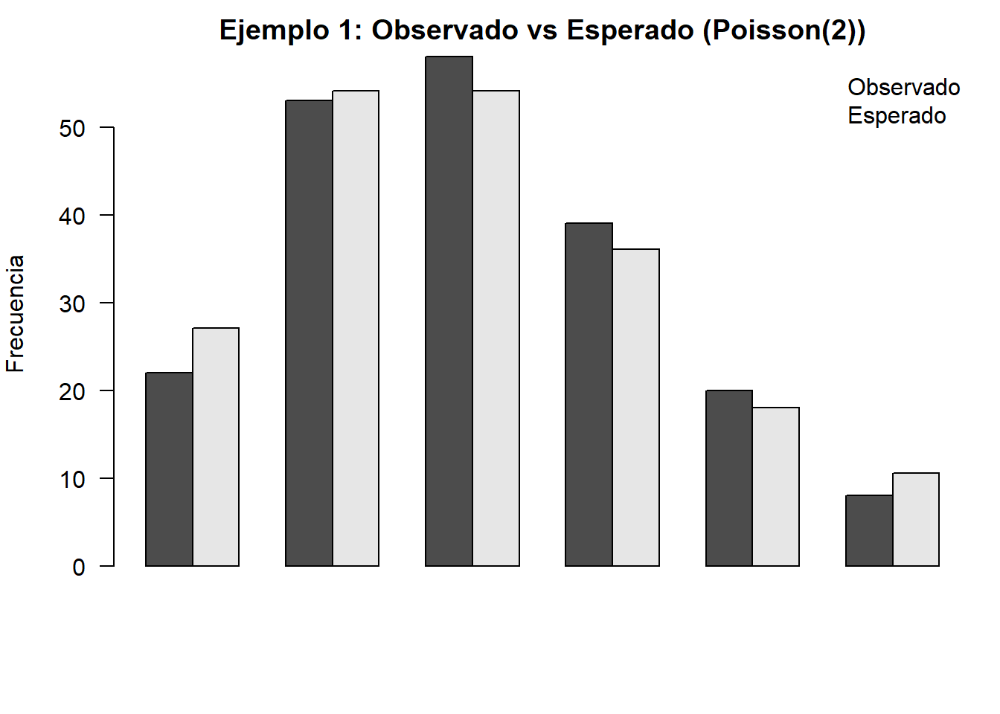
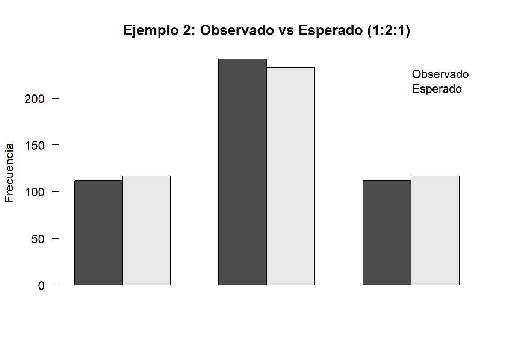
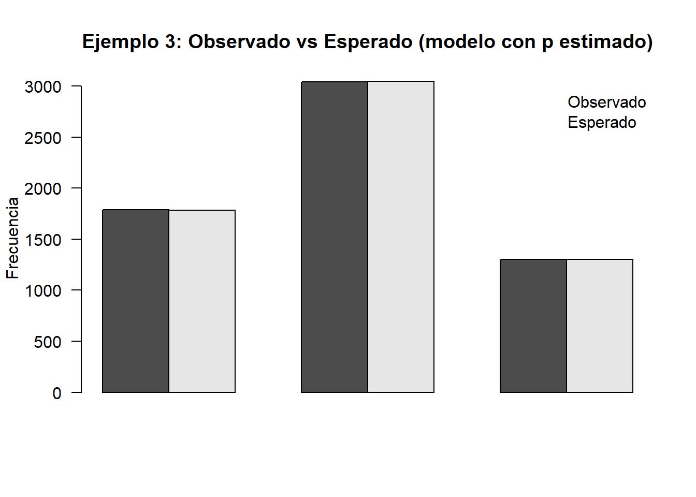
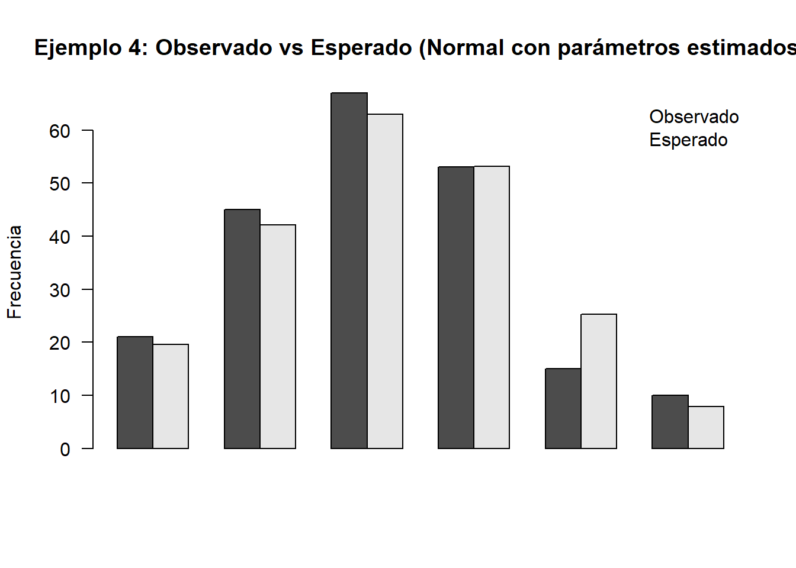
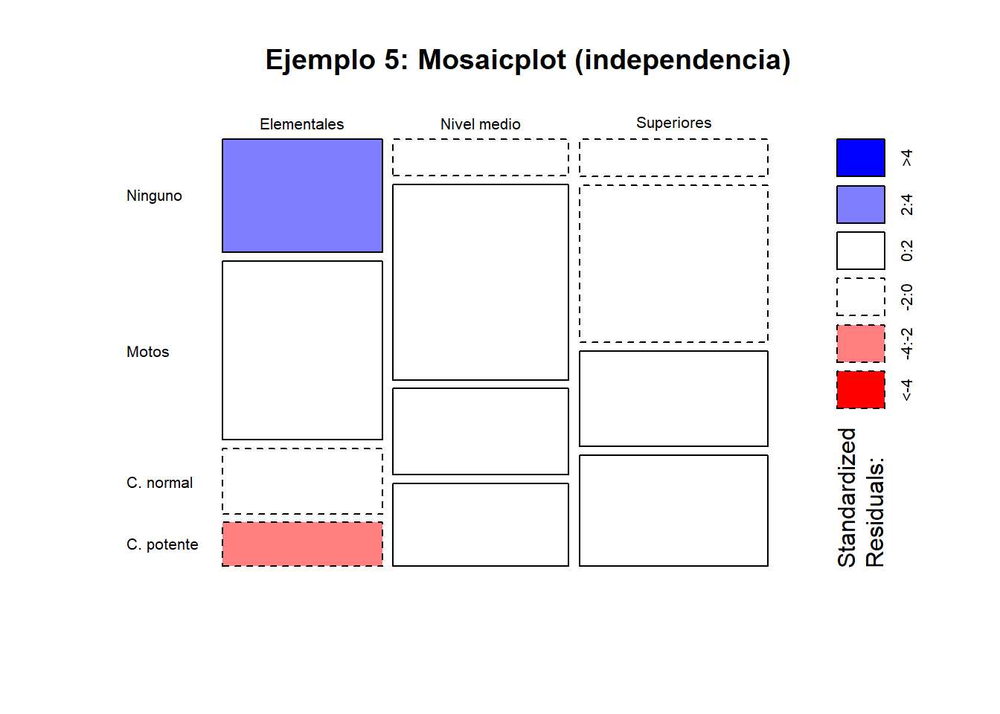
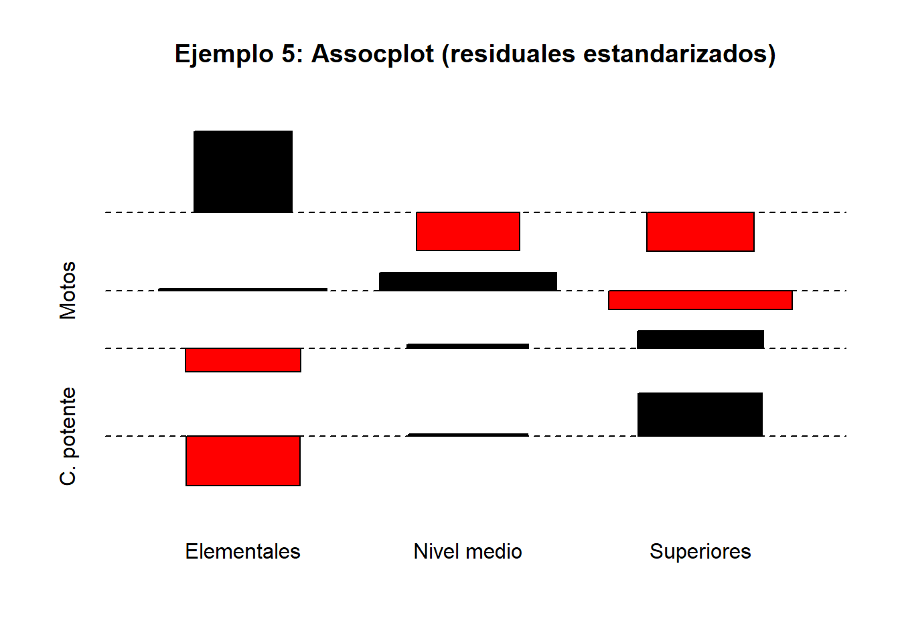
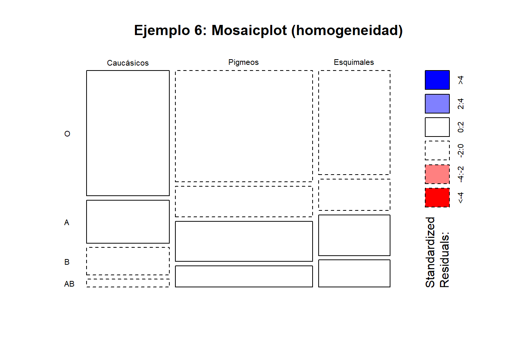
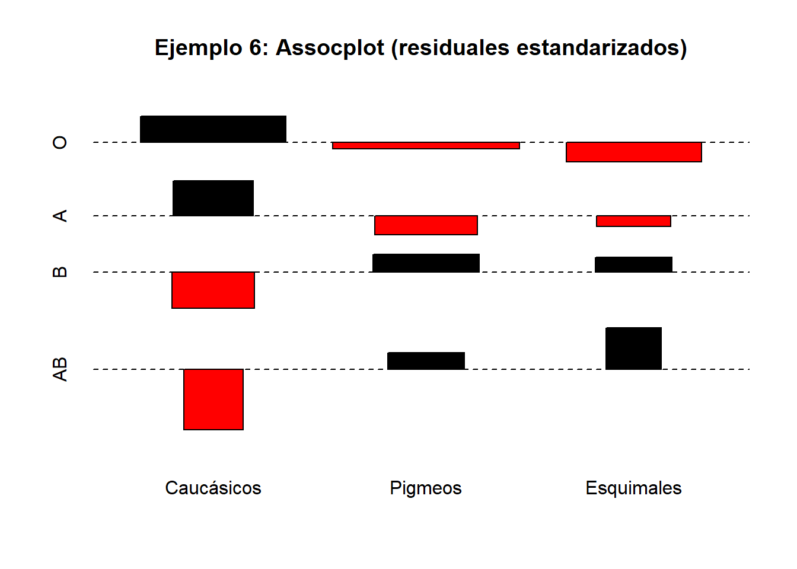

Capítulo 13 Las pruebas “Chi-cuadrado”
13.1 Introducción
Con el nombre de pruebas de chi-cuadrado se conoce una variedad de contrastes estadísticos que hacen referencia a problemas distintos pero que presentan los siguientes rasgos en común:
- Las muestras corresponden a datos categóricos, directamente o por categorización de una variable numérica; es decir, se observa si un individuo pertenece a un elemento de una partición \(A_{1}, A_{2}, \ldots, A_{k}\) del espacio muestral.
- El estadístico del contraste tiene una estructura común:
\[ \sum_{i} \frac{(O_i - E_i)^2}{E_i} \]
donde
- \(O_i\) es el número de observaciones en la categoría \(i\),
- \(E_i\) es el número de observaciones esperadas en dicha categoría bajo la hipótesis nula.
En todos los casos, el estadístico del contraste tiene distribución asintótica \(\chi^2\).
Consideramos tres grandes grupos de pruebas:
- Pruebas de bondad de ajuste (goodness of fit):
- todos los parámetros de la distribución son conocidos;
- algunos parámetros de la distribución son desconocidos.
- todos los parámetros de la distribución son conocidos;
- Pruebas de independencia.
- Pruebas de homogeneidad.
13.2 Pruebas \(\chi^2\) de bondad de ajuste
13.2.1 Hipótesis simples
Sea \(X_1, X_2, \ldots, X_n\) una muestra aleatoria simple (m.a.s.) de una variable aleatoria \(X\). Queremos contrastar la hipótesis de que \(X\) sigue una distribución completamente especificada \(F_{\theta_0}\):
\[ \begin{aligned} H_0 &: X \sim F_{\theta_0},\\ H_1 &: X \nsim F_{\theta_0}. \end{aligned} \]
Sea \(R\) el soporte (recorrido) de la distribución poblacional y consideremos una partición de \(R\) en \(k\) subconjuntos disjuntos \(R_1, R_2, \ldots, R_k\). Esto induce una partición del espacio muestral en los sucesos
\[ A_i = \{X \in R_i\}, \quad i=1,\ldots,k. \]
Si \(n_i\) denota el número de observaciones muestrales que caen en \(R_i\), el vector de recuentos \((n_1, \ldots, n_k)\) sigue una distribución multinomial
\[ (n_1, \ldots, n_k) \sim M\bigl(n; p_1, \ldots, p_k\bigr), \]
donde \(p_i = P(A_i)\).
Este planteamiento transforma el contraste sobre la distribución de \(X\) en un contraste sobre las probabilidades \((p_1, \ldots, p_k)\):
\[ \begin{aligned} H_0 &: P(A_i) = p_i^0 = \int_{R_i} dF_{\theta_0}(x),\\ H_1 &: P(A_i) \neq p_i^0. \end{aligned} \]
Obsérvese que no se contrasta que el vector de recuentos tenga distribución multinomial (esto viene dado por el muestreo), sino si las probabilidades \(p_i\) coinciden con las impuestas por la hipótesis nula.
13.2.2 Estadístico de Pearson
A comienzos del siglo XX, Karl Pearson propuso como estadístico de contraste la cantidad
\[ D^2 = \sum_{i=1}^k \frac{(n_i - n p_i^0)^2}{n p_i^0}. \]
Este estadístico mide la discrepancia entre las frecuencias observadas y las esperadas bajo \(H_0\). Su interés fundamental radica en que se conoce su distribución asintótica bajo la hipótesis nula.
13.2.2.1 Teorema (Pearson)
Si las probabilidades \(p_1^0, \ldots, p_k^0\) son conocidas, entonces
\[ D^2 \xrightarrow[n\to\infty]{\mathcal{L}} \chi^2_{k-1}. \]
Este resultado permite construir un contraste asintótico de nivel \(\alpha\) que rechaza \(H_0\) cuando
\[ D^2 \ge \chi^2_{k-1,1-\alpha}. \]
13.2.3 Observaciones prácticas
- El contraste es asintótico, por lo que se requiere un tamaño muestral suficientemente grande. En la práctica se exige que todas las frecuencias esperadas cumplan \(n p_i^0 \ge 5\).
- El contraste depende de la partición elegida. Conviene tomar \(k \ge 5\) siempre que sea posible para evitar situaciones poco discriminantes.
13.2.4 Ejemplo 1: Bondad de ajuste
Una compañía afirma que el número diario de accidentes laborales sigue una distribución de Poisson de parámetro \(\lambda=2\). Un estudio, basado en los accidentes producidos durante 200 días, da el resultado siguiente:
| \(N^{\underline{O}}\) de accidentes | 0 | 1 | 2 | 3 | 4 | 5 | 6 | 7 |
|---|---|---|---|---|---|---|---|---|
| Días | 22 | 53 | 58 | 39 | 20 | 5 | 2 | 1 |
Para contrastar el ajuste a una distribución de Poisson debemos calcular las probabilidades
\[ p_{i}^{0}=P_{\lambda=2}[X=i]=e^{-\lambda} \frac{\lambda^{i}}{i!}, \quad i=1, \ldots, 7 . \]
Las frecuencias esperadas serán \(n p_{i}^{0}=200 p_{i}^{0}\). Cuando \(i=6,7\) los valores son demasiado pequeños, de forma que se agrupan los valores en una única categoría “\(i \geq 5\)”.
| \(x_{i}\) | 0 | 1 | 2 | 3 | 4 | \(\geq 5\) | \(\Sigma\) |
|---|---|---|---|---|---|---|---|
| \(n_{i}\) | 22 | 53 | 58 | 39 | 20 | 8 | 200 |
| \(p_{i}^{0}\) | 0.135 | 0.271 | 0.271 | 0.180 | 0.090 | 0.053 | 1 |
| \(n p_{i}^{0}\) | 27.067 | 54.134 | 54.134 | 36.089 | 18.045 | 10.531 | 200 |
| \(\frac{\left(n p_{i}^{0}-n_{i}\right)^{2}}{n p_{i}^{0}}\) | 0.9486 | 0.0238 | 0.2761 | 0.2347 | 0.2119 | 0.6081 | 2.303 |
El valor del estadístico de test es, por tanto, 2.303. El \(p\)-valor correspondiente, es decir, \(P\left(\chi_{6-1}^{2} \geq 2.303\right)\), es 0.80588 y, por tanto, no podemos rechazar la hipótesis de que los datos siguen una distribución de Poisson de parámetro \(\lambda=2\). Otra forma de tomar la misma decisión es observar que el percentil 0.95 de dicha distribución es \(\chi_{5,0.95}^{2}=11.07\), de donde, dado que \(2.303<\chi_{5,0.95}^{2}\), vemos que no podemos rechazar \(H_{0}\).
13.2.5 Ejemplo 2: Ajuste de modelo genético
Un cierto modelo genético para unas plantas cuyas flores pueden ser blancas, rosas o rojas afirma que la proporción con la que deben aparecer es de \(1:2:1\). En un estudio se obtuvieron 112 flores blancas, 242 rosas y 112 rojas. ¿Concuerdan las observaciones con el modelo? Construimos la tabla de cálculos y obtenemos:
| \(A_{i}\) | Blanca | Rosa | Rojas | \(\Sigma\) |
|---|---|---|---|---|
| \(n_{i}\) | 112 | 242 | 112 | 467 |
| \(p_{i}^{0}\) | 0.25 | 0.5 | 0.25 | 1 |
| \(n p_{i}^{0}\) | 116.7 | 233 | 116.7 | 467 |
| \(\frac{\left(n p_{i}^{0}-n_{i}\right)^{2}}{n p_{i}^{0}}\) | 0.117 | 0.348 | 0.193 | \(\mathbf{0 . 6 5 7}\) |
El valor crítico es el percentil de una distribución ji-cuadrado con dos grados de libertad, \(\chi_{2,0.95}^{2}=5.99\), de donde, dado que \(0.657<\chi_{2,0.95}^{2}\), vemos que no podemos rechazar \(H_{0}\).
Obsérvese que el primer ejemplo corresponde a una variable numérica que se ha categorizado, mientras que el segundo se refiere directamente a una distribución multinomial.
13.2.6 Hipótesis compuestas
El test de ajuste que hemos discutido en la sección anterior corresponde a una situación poco habitual. En la práctica, lo que nos interesará es decidir si los datos se ajustan a una determinada familia de distribuciones. Por ejemplo, antes de aplicar un test en el que se supone que los datos siguen una ley Normal, hay que verificar hasta qué punto es válida esta suposición.
En este caso nos encontramos en una situación análoga a la anterior, salvo por el hecho de que la distribución no está completamente especificada sino que depende de un parámetro \(m\)-dimensional.
\[ \begin{aligned} X & \sim F_{\theta},\left(\theta \in \Theta \subset \mathbb{R}^{m}\right) \\ R & =\operatorname{Rec}(X)=\biguplus_{i=1}^{k} R_{i}, \quad A_{i}=\left\{X \in R_{i}\right\}, P\left(A_{i}\right)=p_{i}(\theta) \Longrightarrow \\ Y & =\left(n_{1}, \ldots, n_{k}\right), n_{i}=\# A_{i} \quad Y \sim M\left(n ; \mathbf{p}=\left(p_{1}(\theta), \ldots, p_{k}(\theta)\right)\right) . \end{aligned} \]
Una primera idea que se nos podría ocurrir para abordar este problema sería estimar \(\theta\) mediante un estimador \(\hat{\theta}\) y sustituir \(p_{i}^{0}\) por \(p_{i}(\hat{\theta})\) en (7.1). Esto no sería mala idea si la estimación se basase en una muestra distinta de la que se usa para realizar el ajuste.
Ahora bien, este no es el caso aquí. Si usamos la muestra para estimar los parámetros y después hacemos el ajuste, estamos “forzando la muestra” a seleccionar la distribución poblacional para que se ajuste bien a la muestra a través de la estimación de los parámetros (estamos haciendo un ajuste condicionado). Para compensarlo, intentaremos ser “más exigentes” a la hora de juzgar si las frecuencias observadas se corresponden con las esperadas, y eso se reflejará en que, en lugar de basarnos en una distribución \(\chi^{2}\) con \(k-1\) grados de libertad, lo haremos en una con \(k-1-m\) grados de libertad, donde \(m\) representará el número de parámetros que hemos tenido que estimar. Este resultado se expresa en el teorema siguiente:
Teorema: Bajo las condiciones del teorema 1 supongamos que las probabilidades \(p_{1}, \ldots, p_{k}\) dependen de parámetros desconocidos \(\theta=\theta_{1}, \ldots, \theta_{m}\). Sean \(\hat{\theta}=\hat{\theta}_{1}, \ldots, \hat{\theta}_{m}\) las estimaciones de máxima verosimilitud de los parámetros \(\theta\) y supongamos que se verifican las siguientes condiciones de regularidad:
- Las derivadas parciales \(\frac{\partial p_{i}}{\partial \theta_{j}}, \frac{\partial^{2} p_{i}}{\partial \theta_{i} \partial \theta_{j}}\) existen y son continuas.
- La matriz jacobiana \(\frac{\partial p_{i}}{\partial \theta_{j}}\), \(i=1, \ldots, k\), \(j=1, \ldots, m\), tiene rango \(m\).
Entonces el estadístico
\[ D^{2}=\sum_{i=1}^{k} \frac{\left(n_{i}-n p_{i}(\hat{\theta})\right)^{2}}{n p_{i}(\hat{\theta})} \]
verifica
\[ D^{2} \xrightarrow[n \rightarrow \infty]{£} \chi_{k-1-\operatorname{dim}(\Theta)}^{2} \]
es decir, tiene distribución asintótica \(\chi^{2}\) con \(k-1-\operatorname{dim}(\Theta)\) grados de libertad.
Podemos proceder de forma análoga al caso de probabilidades conocidas para establecer el test siguiente:
Definición 7.2 Test de bondad de ajuste cuando hay que estimar parámetros
Sean:
\[ \begin{aligned} X & \sim F_{\theta},\left(\theta \in \Theta \subset \Re^{m}\right) \quad R: \operatorname{Rec}(X)=\biguplus_{i=1}^{k} R_{i} \\ A_{i} & =\left\{X \in R_{i}\right\}, P\left(A_{i}\right)=p_{i}(\theta) \\ Y & =\left(n_{1}, \ldots, n_{k}\right), n_{i}=\# A_{i}, \quad Y \sim M\left(n ; \mathbf{p}=\left(p_{1}(\theta), \ldots, p_{k}(\theta)\right)\right) . \end{aligned} \]
Entonces, para contrastar las hipótesis:
\[ \begin{array}{ll} H_{0}: & X \sim F_{\theta}^{0} \Leftrightarrow \mathbf{p}=\left(p_{1}(\theta), \ldots, p_{k}(\theta)\right) \\ H_{1}: & \mathbf{p} \neq\left(p_{1}(\theta), \ldots, p_{k}(\theta)\right) \end{array} \]
el test consiste en rechazar \(H_{0}\) si \(D^{2} \geq \chi_{k-1-\operatorname{dim}(\Theta), 1-\alpha}^{2}\), donde
\[ \begin{aligned} D^{2}= & \sum_{i=1}^{k} \frac{\left(n_{i}-n p_{i}(\hat{\theta})\right)^{2}}{n p_{i}(\hat{\theta})} \\ D^{2} & \underset{n \rightarrow \infty}{\stackrel{£}{\rightarrow}} \chi_{k-1-\operatorname{dim}(\Theta)}^{2} \end{aligned} \]
es un test asintótico de nivel \(\alpha\). Este resultado establece que una región crítica para el test 7.2 tendrá la forma
\[ W=\left\{D^{2} \geq \chi_{k-1-\operatorname{dim}(\Theta), 1-\alpha}^{2}\right\} \]
donde \(\chi_{k-1,1-\alpha}^{2}\) es el cuantil \(1-\alpha\) de una distribución \(\chi^{2}\) con \(k-1-\operatorname{dim}(\Theta)\) grados de libertad.
13.2.7 Ejemplo 3: Ajuste de modelo genético con probabilidades desconocidas
En el ejemplo anterior, cuando hemos ajustado unos datos a unas proporciones del tipo “1:2:1” o “9:3:3:1” estábamos suponiendo dos cosas:
- Un modelo genético (que no tenemos por qué conocer)
- Unas probabilidades fijadas.
Esto lo hemos sintetizado en un vector numérico \(\left(p_{1}^{0}, \ldots, p_{k}^{0}\right)\). Por ejemplo, en (7.2.2) la proporción “1:2:1” viene de suponer:
- Como modelo: \(p^{2}, 2 p(1-p), q^{2}\),
- Como probabilidades: \(p=\frac{1}{2}\).
A menudo nos interesa ajustar solo el modelo, es decir, decidir si, por ejemplo, el modelo \(p^{2}, 2 p(1-p), q^{2}\) describe bien los datos observados para algún \(p \in(0,1)\). En este caso, antes de comparar los observados \(n_{i}\) con los esperados \(p_{i}\), tendremos que estimar los valores de los \(p_{i}\).
Bajo la suposición de un modelo multinomial,
\[ \begin{array}{ll} Y \sim M(n, \mathbf{p}(\theta), & \theta=p, \\ & p_{1}(\theta)=p^{2}, p_{2}(\theta)=2 p(1-p), p_{3}(\theta)=(1-p)^{2} \end{array} \]
la verosimilitud del modelo es:
\[ L\left(n_{1}, \ldots, n_{k} ; \mathbf{p}(\theta)\right) \propto\left(p^{2}\right)^{n_{1}} \cdot(2 p(1-p))^{n_{2}} \cdot\left(q^{2}\right)^{n_{3}} \]
Una aplicación rutinaria del método de máxima verosimilitud da como estimador de máxima verosimilitud de \(p\):
\[ \hat{p}_{M V}=\frac{2 n_{1}+n_{2}}{2 n_{1}+2 n_{2}+2 n_{3}} \]
Supongamos ahora que tenemos unos datos genéticos correspondientes al grupo sanguíneo \(M-N\) en una población de 6129 individuos, indios navajos, que son los siguientes:
| Grupo | \(M\) | \(M-N\) | \(N\) |
|---|---|---|---|
| Individuos | 1787 | 3039 | 1303 |
El estimador de máxima verosimilitud calculado sobre los datos del ejemplo es:
\[ \hat{p}_{M V}=\frac{2 \cdot 1787+3039}{2 \cdot 1787+2 \cdot 3039+2 \cdot 1303}=0.539 \]
de donde la tabla con los valores observados y esperados para hacer el test de ajuste es:
| M | \(M-N\) | \(N\) | \(\Sigma\) | |
|---|---|---|---|---|
| \(n_{i}\) | 1787 | 3039 | 1303 | 6129 |
| \(p_{i}\left(\hat{p}_{M V}\right)\) | 0.539 | 2. 0.539. 0.461 | 0.461 | 1 |
| \(n p_{i}\left(\hat{p}_{M V}\right)\) | 1784 | 3046 | 1299.8 | 6129 |
| \(\frac{\left(n p_{i}\left(\hat{p}_{M V}\right)-n_{i}\right)^{2}}{n p_{i}\left(\hat{p}_{M V}\right)}\) | 0.0067 | 0.0166 | 0.0078 | 0.0311 |
El valor crítico es el percentil de una distribución ji-cuadrado con dos menos un grados de libertad, \(\chi_{1,0.95}^{2}=3.841\), de donde, dado que \(0.0311<\chi_{1,0.95}^{2}\), vemos que no podemos rechazar \(H_{0}\).
13.2.8 Ejemplo 4: Ajuste a una distribución normal
En un estudio sobre bilingüismo se aplicó una prueba a una muestra de 211 alumnos y se obtuvieron 211 puntuaciones que, una vez tabuladas, eran las siguientes:
| Puntuación | \((\leq 55]\) | \((55-60]\) | \((60-65]\) | \((65-70]\) | \((70-75]\) | \((75-80]\) | \((80-85]\) |
|---|---|---|---|---|---|---|---|
| Frecuencia | 4 | 17 | 45 | 67 | 53 | 15 | 10 |
¿Podemos aceptar la hipótesis de que la puntuación sigue una distribución normal? Fijémonos en que aquí no nos interesa más que el hecho de que sea normal, no una normal en concreto. Es decir, tenemos:
\[ \begin{array}{ll} H_{0}: & X \sim N(\mu, \sigma) \\ H_{1}: & X \nsim N(\mu, \sigma) . \end{array} \]
En primer lugar estimamos los parámetros:
\[ \begin{aligned} \hat{\mu} & =\bar{X}=68.52 \\ \hat{\sigma}^{2} & =S^{2}=6.44 \end{aligned} \]
Cada categoría \(A_{i}\) es un intervalo del recorrido de la variable: \(A_{1}=X \in (-\infty, 55]\), \(A_{2}=X \in(55,60] \ldots\), de manera que si \(A_{i}=(a, b]\), las probabilidades \(p_{i}=P\left(A_{i}\right)\) se calcularán, si suponemos que \(Y\) representa una variable con distribución normal de media \(\hat{\mu}=\bar{x}\) y desviación típica \(\hat{\sigma}=s^{2}\):
\[ \begin{aligned} p_{i}=p_{i}\left(\bar{x}, s^{2}\right) & =P_{\bar{x}, s^{2}}\left(X \in A_{i}\right)=F_{Y}(b)-F_{Y}(a) \\ & =\Phi\left(\frac{b-\bar{x}}{s}\right)-\Phi\left(\frac{a-\bar{x}}{s}\right), \end{aligned} \]
donde \(\Phi\) es la función de distribución de una variable \(N(0,1)\). Si calculamos las probabilidades en esos intervalos y construimos la tabla, obtenemos:
| Puntuación | \((\leq 55]\) | \((55-60]\) | \((60-65]\) | \((65-70]\) | \((70-75]\) | \((75-80]\) | \((\geq 80)\) |
|---|---|---|---|---|---|---|---|
| \(n_{i}\) | 4 | 17 | 45 | 67 | 53 | 15 | 10 |
| \(p_{i}\left(\bar{x}, s^{2}\right)\) | 0.01786 | 0.07556 | 0.19774 | 0.29979 | 0.2528 | 0.11871 | 0.03654 |
| \(n \cdot p_{i}\left(\bar{x}, s^{2}\right)\) | 3.77 | 15.94 | 41.72 | 63.26 | 53.34 | 25.05 | 7.92 |
Antes de calcular el valor del estadístico de test hay que fusionar las dos primeras columnas, ya que la frecuencia esperada es inferior a 5. La tabla final queda:
| Puntuación | \((\leq 60]\) | \((60-65]\) | \((65-70]\) | \((70-75]\) | \((75-80]\) | \((\geq 80)\) |
|---|---|---|---|---|---|---|
| \(n_{i}\) | \(4+17\) | 45 | 67 | 53 | 15 | 10 |
| \(n \cdot p_{i}\left(\bar{x}, s^{2}\right)\) | \(3.77+15.94\) | 41.72 | 63.26 | 53.34 | 25.05 | 7.92 |
El estadístico de test, \(D^{2}\), vale aquí: 5.144. Como hemos estimado 2 parámetros y la tabla final tiene 6 columnas, obtendremos el valor crítico de una \(\chi^{2}\) con \(6-2-1\) grado de libertad. En concreto: rechazaremos \(H_{0}\) si \(D^{2}>\chi_{(3,0.05)}^{2}\). Como esto no ocurre, no podemos rechazar \(H_{0}\).
13.3 Pruebas de independencia en tablas de contingencia
Sea \(\Omega\) una población que admite dos descomposiciones diferentes en eventos excluyentes. Por ejemplo, una descomposición puede hacerse por sexo (hombres/mujeres) y la otra por tabaquismo (fumadores/no fumadores).
\[ \Omega=A_{1} \biguplus \cdots \biguplus A_{k}=B_{1} \biguplus \cdots \biguplus B_{r}, \]
donde el símbolo \(\biguplus\) indica unión disjunta. Supongamos que se realizan \(n\) observaciones o pruebas independientes, de modo que \(n_{ij}\) representa la frecuencia con la que se presenta el evento \(A_i \cap B_j\). Podemos disponer las observaciones en una tabla cruzada o de contingencia de \(r\) filas por \(k\) columnas:
| \(A_{1}\) | \(\cdots\) | \(A_{k}\) | ||
|---|---|---|---|---|
| \(\mathrm{B}_{1}\) | \(\mathrm{n}_{11}\) | \(\cdots\) | \(\mathrm{n}_{1k}\) | \(\mathrm{n}_{1\cdot}\) |
| \(\vdots\) | \(\vdots\) | \(\ddots\) | \(\vdots\) | |
| \(\mathrm{B}_{r}\) | \(\mathrm{n}_{r1}\) | \(\cdots\) | \(\mathrm{n}_{rk}\) | \(\mathrm{n}_{r\cdot}\) |
| \(\mathrm{n}_{\cdot 1}\) | \(\mathrm{n}_{\cdot k}\) | \(n\) |
donde \(n_{i\cdot}=\sum_{j=1}^{k} n_{ij}\) es la frecuencia del evento \(A_i\) y \(n_{\cdot j}=\sum_{i=1}^{r} n_{ij}\) es la frecuencia del evento \(B_j\).
Supongamos que queremos contrastar la hipótesis de que las dos particiones son independientes, es decir,
\[ H_{0}: \quad A_i \text{ es estocásticamente independiente de } B_j, \]
lo que equivale a
\[ P(A_i \cap B_j)=P(A_i)\,P(B_j), \quad i=1,\ldots,k,\; j=1,\ldots,r. \]
Si indicamos \(p_{ij}=P(A_i \cap B_j)\) e introducimos los parámetros
\[ p_{1\cdot},\ldots,p_{r\cdot},\quad \sum_{i=1}^{r} p_{i\cdot}=1,\qquad p_{\cdot 1},\ldots,p_{\cdot k},\quad \sum_{j=1}^{k} p_{\cdot j}=1, \]
la hipótesis nula se expresará como
\[ p_{ij}=p_{i\cdot}\,p_{\cdot j}. \]
Es fácil ver que, en este caso, los estimadores de máxima verosimilitud de las probabilidades marginales son las frecuencias relativas:
\[ \hat p_{i\cdot}=\frac{n_{i\cdot}}{n}, \qquad \hat p_{\cdot j}=\frac{n_{\cdot j}}{n}, \]
y la frecuencia esperada del evento \(A_i \cap B_j\) bajo \(H_0\) será
\[ n\,\hat p_{i\cdot}\,\hat p_{\cdot j} = n\,\frac{n_{i\cdot}}{n}\,\frac{n_{\cdot j}}{n} = \frac{n_{i\cdot}\,n_{\cdot j}}{n}. \]
Aplicando el Teorema 7.2 se tiene que el estadístico
\[ D^{2}=\sum_{i=1}^{k}\sum_{j=1}^{r} \frac{\left(n_{ij}-\frac{n_{i\cdot}n_{\cdot j}}{n}\right)^{2}} {\frac{n_{i\cdot}n_{\cdot j}}{n}} \]
verifica
\[ D^{2}\xrightarrow[n\to\infty]{\mathcal{L}} \chi^{2}_{(r-1)(k-1)}. \]
Como consecuencia, el test de independencia para la hipótesis
\[ H_{0}: \quad P(A_i\cap B_j)=P(A_i)\,P(B_j) \;\Longleftrightarrow\; p_{ij}=p_{i\cdot}\,p_{\cdot j} \]
consiste en calcular
\[ D^{2}=\sum_{i=1}^{k}\sum_{j=1}^{r} \frac{\left(n_{ij}-\frac{n_{i\cdot}n_{\cdot j}}{n}\right)^{2}} {\frac{n_{i\cdot}n_{\cdot j}}{n}} \]
y rechazar \(H_{0}\) si
\[ D^{2}\ge \chi^{2}_{(k-1)(r-1),\,1-\alpha}. \]
13.3.1 Ejemplo 5: Relación entre nivel de estudios y preferencias
En un estudio de mercado se intenta determinar si existe alguna relación entre las preferencias de un grupo de consumidores por un tipo de vehículo y su nivel cultural. Se pregunta a 300 personas entre 20 y 50 años qué vehículo poseen y se clasifican en “NINGUNO”, “MOTOCICLETAS”, “COCHES NORMALES” y “COCHES POTENTES”. El nivel cultural se determina según hayan cursado estudios “ELEMENTALES”, “DE GRADO MEDIO” o “SUPERIORES”. ¿Qué se puede concluir a partir de los siguientes datos?
| NINGUNO | MOTOS | C. NORMAL | C. POTENTE | TOTAL | |
|---|---|---|---|---|---|
| Elementales | 31 | 49 | 18 | 12 | 110 |
| Nivel medio | 11 | 59 | 26 | 25 | 121 |
| Superiores | 12 | 51 | 31 | 36 | 130 |
| TOTAL | 54 | 159 | 75 | 73 | 361 |
La tabla de frecuencias esperadas es:
| NINGUNO | MOTOS | C. NORMAL | C. POTENTE | TOTAL | |
|---|---|---|---|---|---|
| Elementales | 16.5 | 48.4 | 22.9 | 22.2 | 110 |
| Nivel medio | 18.1 | 53.3 | 25.1 | 24.5 | 121 |
| Superiores | 19.4 | 57.3 | 27.0 | 26.3 | 130 |
| TOTAL | 54 | 159 | 75 | 73 | 361 |
El valor del estadístico de contraste \(D^{2}\) calculado sobre estos datos es 29.76. El valor crítico de una distribución \(\chi^2\) con \((4-1)(3-1)=6\) grados de libertad y nivel de significación 0.05 es 12.59. Dado que
\[ 29.76 \ge 12.59=\chi^{2}_{(3-1)(4-1),\,1-0.05}, \]
se rechaza la hipótesis de independencia; es decir, parece existir relación entre el nivel de estudios y el tipo de vehículo.
13.4 Pruebas de homogeneidad
Supongamos que tenemos una misma partición
\[ \Omega=A_{1} \biguplus \cdots \biguplus A_{k}, \]
en \(r\) poblaciones:
| \(A_{1}\) | \(\cdots\) | \(A_{k}\) | ||
|---|---|---|---|---|
| 1 | \(\mathrm{n}_{11}\) | \(\cdots\) | \(\mathrm{n}_{1k}\) | \(\mathrm{n}_{1}\) |
| \(\vdots\) | \(\vdots\) | \(\ddots\) | \(\vdots\) | |
| \(r\) | \(\mathrm{n}_{r1}\) | \(\cdots\) | \(\mathrm{n}_{rk}\) | \(\mathrm{n}_{r}\) |
| \(\mathrm{n}_{\cdot 1}\) | \(\mathrm{n}_{\cdot k}\) | \(n\) |
y queremos contrastar la hipótesis
\[ \begin{aligned} p_{11}&=p_{21}=\cdots=p_{r1},\\ p_{12}&=p_{22}=\cdots=p_{r2},\\ &\ \vdots\\ p_{1k}&=p_{2k}=\cdots=p_{rk}. \end{aligned} \]
De forma análoga al apartado anterior puede establecerse que el estadístico
\[ D^{2}=\sum_{i=1}^{k}\sum_{j=1}^{r} \frac{\left(n_{ij}-n_{i}\frac{n_{\cdot j}}{n}\right)^{2}} {n_{i}\frac{n_{\cdot j}}{n}} \]
verifica
\[ D^{2}\xrightarrow[n\to\infty]{\mathcal{L}} \chi^{2}_{(r-1)(k-1)}, \]
de modo que la hipótesis nula se rechazará siempre que
\[ D^{2}\ge \chi^{2}_{(k-1)(r-1),\,1-\alpha}. \]
13.4.1 Ejemplo 6: Homogeneidad en los grupos sanguíneos
En un estudio antropológico se analiza la distribución de los grupos sanguíneos \(O,A,B,AB\) entre tres razas humanas. La siguiente tabla contiene las frecuencias observadas y esperadas, así como el análisis realizado con el programa SPSS, donde se observa que no se puede rechazar la hipótesis nula de que la probabilidad de cada grupo sanguíneo es la misma en todas las razas.
Tabla de contingencia Raza × Grupo sanguíneo
| Grupo sanguíneo | Total | ||||||
|---|---|---|---|---|---|---|---|
| O | A | B | AB | ||||
| Raza | Caucásicos | Recuento | 32 | 11 | 7 | 2 | 52 |
| Frecuencia esperada | 29.0 | 8.8 | 9.4 | 4.8 | 52.0 | ||
| % de grupo sanguíneo | 31.4% | 35.5% | 21.2% | 11.8% | 28.4% | ||
| Pigmeos | Recuento | 47 | 13 | 17 | 9 | 86 | |
| Frecuencia esperada | 47.9 | 14.6 | 15.5 | 8.0 | 86.0 | ||
| % de grupo sanguíneo | 46.1% | 41.9% | 51.5% | 52.9% | 47.0% | ||
| Esquimales | Recuento | 23 | 7 | 9 | 6 | 45 | |
| Frecuencia esperada | 25.1 | 7.6 | 8.1 | 4.2 | 45.0 | ||
| % de grupo sanguíneo | 22.5% | 22.6% | 27.3% | 35.3% | 24.6% | ||
| Total | Recuento | 102 | 31 | 33 | 17 | 183 | |
| Frecuencia esperada | 102.0 | 31.0 | 33.0 | 17.0 | 183.0 |
A partir de esta información queremos contrastar si la distribución de los grupos sanguíneos es la misma en las tres razas consideradas. Formalmente, planteamos el contraste de homogeneidad:
\[ \begin{aligned} H_0 &: p_{1j}=p_{2j}=p_{3j}, \quad j=1,\ldots,4, \\ H_1 &: \text{no todas las probabilidades anteriores son iguales}. \end{aligned} \]
Bajo la hipótesis nula, la frecuencia esperada en la celda correspondiente a la raza \(i\) y al grupo sanguíneo \(j\) viene dada por
\[ E_{ij}=\frac{n_{i\cdot}\,n_{\cdot j}}{n}, \]
donde \(n_{i\cdot}\) es el total de individuos de la raza \(i\), \(n_{\cdot j}\) el total del grupo sanguíneo \(j\) y \(n\) el tamaño muestral total. Estas frecuencias esperadas son las que figuran en la tabla anterior.
El estadístico de contraste es el estadístico de Pearson
\[ D^{2} = \sum_{i=1}^{3}\sum_{j=1}^{4} \frac{(n_{ij}-E_{ij})^{2}}{E_{ij}}, \]
que mide la discrepancia global entre las frecuencias observadas y las esperadas bajo la hipótesis de homogeneidad.
En este caso, la tabla tiene \(r=3\) filas y \(k=4\) columnas, por lo que, bajo \(H_{0}\), el estadístico \(D^{2}\) sigue asintóticamente una distribución ji-cuadrado con
\[ (r-1)(k-1)=(3-1)(4-1)=6 \]
grados de libertad.
El análisis realizado muestra que el valor observado del estadístico es inferior al valor crítico de una distribución \(\chi^{2}_{6}\) al nivel de significación \(\alpha=0.05\), cuyo percentil 0.95 es \(\chi^{2}_{6,0.95}=12.59\). De forma equivalente, el \(p\)-valor asociado al contraste es suficientemente grande.
Por tanto, no se rechaza la hipótesis nula de homogeneidad, y los datos son compatibles con la hipótesis de que la probabilidad de pertenecer a cada grupo sanguíneo es la misma en las tres razas consideradas.
13.5 Ejemplos resueltos en R
La primera versión de este documento se creó en un momento en que R no era la herramienta universal de los estadísticos por lo que los ejemplos estan resueltos para ser calculados manualmente. En el caso de las pruebas chi-cuadrado esto resulta particularmente interesante por lo que se ha mantenido dicha resolución y se incluyen a continuación la resolución de cada ejercicio con R.
13.5.1 Ejemplo 1: Bondad de ajuste
Datos (200 días). Se contrasta \(H_0: X \sim \text{Poisson}(\lambda=2)\).
n <- 200
obs_raw <- c(`0`=22, `1`=53, `2`=58, `3`=39, `4`=20, `5`=5, `6`=2, `7`=1)
# Agrupamos en categoría ">=5" para evitar esperadas pequeñas
obs <- c(`0`=obs_raw["0"],
`1`=obs_raw["1"],
`2`=obs_raw["2"],
`3`=obs_raw["3"],
`4`=obs_raw["4"],
`>=5`=sum(obs_raw[c("5","6","7")]))
obs## 0.0 1.1 2.2 3.3 4.4 >=5
## 22 53 58 39 20 8
sum(obs)## [1] 200
lambda <- 2
# Probabilidades bajo Poisson(2): 0..4 y >=5
p0_4 <- dpois(0:4, lambda = lambda)
p_ge5 <- 1 - ppois(4, lambda = lambda)
p <- c(p0_4, p_ge5)
names(p) <- names(obs)
# Comprobación: suman 1
sum(p)## [1] 1
# Test chi-cuadrado (probabilidades completamente especificadas)
test1 <- chisq.test(x = obs, p = p, rescale.p = TRUE)
test1##
## Chi-squared test for given probabilities
##
## data: obs
## X-squared = 2.3031, df = 5, p-value = 0.8058
expected <- as.numeric(test1$expected)
stat_contrib <- (obs - expected)^2 / expected
res1 <- data.frame(
Categoria = names(obs),
Observado = as.numeric(obs),
p0 = as.numeric(p),
Esperado = expected,
Contribucion = stat_contrib
)
res1## Categoria Observado p0 Esperado Contribucion
## 0.0 0.0 22 0.13533528 27.06706 0.94857241
## 1.1 1.1 53 0.27067057 54.13411 0.02375975
## 2.2 2.2 58 0.27067057 54.13411 0.27607509
## 3.3 3.3 39 0.18044704 36.08941 0.23473759
## 4.4 4.4 20 0.09022352 18.04470 0.21187273
## >=5 >=5 8 0.05265302 10.53060 0.60812791
sum(res1$Contribucion) # Debe coincidir con el estadístico## [1] 2.303145
op <- par(mar=c(5,4,2,1))
bp <- barplot(rbind(Observado = as.numeric(obs), Esperado = expected),
beside = TRUE, las = 2, ylab = "Frecuencia",
main = "Ejemplo 1: Observado vs Esperado (Poisson(2))")
legend("topright", legend = c("Observado","Esperado"), bty = "n")
par(op)13.5.2 Ejemplo 2: Ajuste de modelo genético
Modelo: proporciones \(1:2:1\) (multinomial con \(p=(0.25,0.5,0.25)\)).
obs <- c(Blanca = 112, Rosa = 242, Roja = 112)
p <- c(0.25, 0.50, 0.25)
test2 <- chisq.test(x = obs, p = p, rescale.p = TRUE)
test2##
## Chi-squared test for given probabilities
##
## data: obs
## X-squared = 0.69528, df = 2, p-value = 0.7064
expected <- as.numeric(test2$expected)
data.frame(
Categoria = names(obs),
Observado = as.numeric(obs),
Esperado = expected,
Contribucion = (obs-expected)^2/expected
)## Categoria Observado Esperado Contribucion
## Blanca Blanca 112 116.5 0.1738197
## Rosa Rosa 242 233.0 0.3476395
## Roja Roja 112 116.5 0.1738197
barplot(rbind(Observado = as.numeric(obs), Esperado = expected),
beside = TRUE, las = 2, ylab = "Frecuencia",
main = "Ejemplo 2: Observado vs Esperado (1:2:1)")
legend("topright", legend = c("Observado","Esperado"), bty = "n")
13.5.3 Ejemplo 3: Ajuste de modelo genético con probabilidades desconocidas
Se contrasta el ajuste a un modelo Hardy–Weinberg para alelos \(M/N\):
\[p_1(p)=p^2,\quad p_2(p)=2p(1-p),\quad p_3(p)=(1-p)^2,\] estimando \(p\) por máxima verosimilitud.
Datos:
| Grupo | M | M-N | N |
|---|---|---|---|
| Individuos | 1787 | 3039 | 1303 |
n1 <- 1787
n2 <- 3039
n3 <- 1303
n <- n1 + n2 + n3
p_hat <- (2*n1 + n2) / (2*n)
p_hat## [1] 0.5394844
p_model <- c(M = p_hat^2,
`M-N` = 2*p_hat*(1-p_hat),
N = (1-p_hat)^2)
expected <- n * p_model
obs <- c(M = n1, `M-N` = n2, N = n3)
# Estadístico de Pearson
D2 <- sum((obs - expected)^2 / expected)
# Grados de libertad ajustados: k - 1 - m = 3 - 1 - 1 = 1
df <- 1
p_value <- 1 - pchisq(D2, df = df)
list(
p_hat = p_hat,
expected = expected,
D2 = D2,
df = df,
p_value = p_value
)## $p_hat
## [1] 0.5394844
##
## $expected
## M M-N N
## 1783.805 3045.390 1299.805
##
## $D2
## [1] 0.02698008
##
## $df
## [1] 1
##
## $p_value
## [1] 0.8695295
barplot(rbind(Observado = as.numeric(obs), Esperado = as.numeric(expected)),
beside = TRUE, las = 2, ylab = "Frecuencia",
main = "Ejemplo 3: Observado vs Esperado (modelo con p estimado)")
legend("topright", legend = c("Observado","Esperado"), bty = "n")
13.5.4 Ejemplo 4: Ajuste a una distribución normal
Se dispone de 211 puntuaciones tabuladas:
| Intervalo | \((\leq 55]\) | \((55-60]\) | \((60-65]\) | \((65-70]\) | \((70-75]\) | \((75-80]\) | \((80-85]\) |
|---|---|---|---|---|---|---|---|
| Frecuencia | 4 | 17 | 45 | 67 | 53 | 15 | 10 |
Queremos contrastar \(H_0: X \sim N(\mu,\sigma)\), con \(\mu\) y \(\sigma\) desconocidos (se estiman).
Importante: como se estiman 2 parámetros, el contraste usa \(k-1-m\) grados de libertad tras posibles fusiones de clases.
obs_raw <- c(`<=55`=4, `55-60`=17, `60-65`=45, `65-70`=67, `70-75`=53, `75-80`=15, `80-85`=10)
n <- sum(obs_raw)
mu_hat <- 68.52
sigma_hat <- 6.44
mu_hat; sigma_hat## [1] 68.52## [1] 6.44
# Intervalos: (-Inf,55], (55,60], ..., (80,Inf)
breaks <- c(-Inf, 55, 60, 65, 70, 75, 80, Inf)
p <- numeric(length(breaks)-1)
for(i in seq_along(p)){
a <- breaks[i]; b <- breaks[i+1]
p[i] <- pnorm(b, mean = mu_hat, sd = sigma_hat) - pnorm(a, mean = mu_hat, sd = sigma_hat)
}
names(p) <- names(c(`<=55`=1, `55-60`=1, `60-65`=1, `65-70`=1, `70-75`=1, `75-80`=1, `>=80`=1))
p## <=55 55-60 60-65 65-70 70-75 75-80 >=80
## 0.01789176 0.07502903 0.19941155 0.29854938 0.25196129 0.11983199 0.03732501
sum(p)## [1] 1
expected_raw <- n * p
# Fusionamos las dos primeras clases si alguna esperada < 5 (en el texto se fusionan)
obs <- c(`<=60` = obs_raw["<=55"] + obs_raw["55-60"],
`60-65` = obs_raw["60-65"],
`65-70` = obs_raw["65-70"],
`70-75` = obs_raw["70-75"],
`75-80` = obs_raw["75-80"],
`>=80` = obs_raw["80-85"])
expected <- c(`<=60` = expected_raw[1] + expected_raw[2],
`60-65` = expected_raw[3],
`65-70` = expected_raw[4],
`70-75` = expected_raw[5],
`75-80` = expected_raw[6],
`>=80` = expected_raw[7])
data.frame(Categoria = names(obs),
Observado = as.numeric(obs),
Esperado = as.numeric(expected))## Categoria Observado Esperado
## 1 <=60.<=55 21 19.606286
## 2 60-65.60-65 45 42.075836
## 3 65-70.65-70 67 62.993920
## 4 70-75.70-75 53 53.163831
## 5 75-80.75-80 15 25.284549
## 6 >=80.80-85 10 7.875577
# Estadístico de Pearson
D2 <- sum((obs - expected)^2 / expected)
k <- length(obs) # número final de clases
m <- 2 # mu y sigma estimados
df <- k - 1 - m
p_value <- 1 - pchisq(D2, df = df)
list(D2 = D2, df = df, p_value = p_value)## $D2
## [1] 5.313888
##
## $df
## [1] 3
##
## $p_value
## [1] 0.1502038
barplot(rbind(Observado = as.numeric(obs), Esperado = as.numeric(expected)),
beside = TRUE, las = 2, ylab = "Frecuencia",
main = "Ejemplo 4: Observado vs Esperado (Normal con parámetros estimados)")
legend("topright", legend = c("Observado","Esperado"), bty = "n")
13.5.5 Ejemplo 5: Relación entre nivel de estudios y preferencias
Tabla (Nivel de estudios × Tipo de vehículo):
tab <- matrix(
c(31,49,18,12,
11,59,26,25,
12,51,31,36),
nrow = 3, byrow = TRUE
)
rownames(tab) <- c("Elementales","Nivel medio","Superiores")
colnames(tab) <- c("Ninguno","Motos","C. normal","C. potente")
tab## Ninguno Motos C. normal C. potente
## Elementales 31 49 18 12
## Nivel medio 11 59 26 25
## Superiores 12 51 31 36
addmargins(tab)## Ninguno Motos C. normal C. potente Sum
## Elementales 31 49 18 12 110
## Nivel medio 11 59 26 25 121
## Superiores 12 51 31 36 130
## Sum 54 159 75 73 361
test5 <- chisq.test(tab, correct = FALSE)
test5##
## Pearson's Chi-squared test
##
## data: tab
## X-squared = 29.763, df = 6, p-value = 4.361e-05
test5$expected## Ninguno Motos C. normal C. potente
## Elementales 16.45429 48.44875 22.85319 22.24377
## Nivel medio 18.09972 53.29363 25.13850 24.46814
## Superiores 19.44598 57.25762 27.00831 26.28809
mosaicplot(tab, shade = TRUE, las = 1,
main = "Ejemplo 5: Mosaicplot (independencia)")
assocplot(tab, main = "Ejemplo 5: Assocplot (residuales estandarizados)")
13.5.6 Ejemplo 6: Homogeneidad en los grupos sanguíneos
Tabla (Raza × Grupo sanguíneo):
tab <- matrix(
c(32,11,7,2,
47,13,17,9,
23,7,9,6),
nrow = 3, byrow = TRUE
)
rownames(tab) <- c("Caucásicos","Pigmeos","Esquimales")
colnames(tab) <- c("O","A","B","AB")
tab## O A B AB
## Caucásicos 32 11 7 2
## Pigmeos 47 13 17 9
## Esquimales 23 7 9 6
addmargins(tab)## O A B AB Sum
## Caucásicos 32 11 7 2 52
## Pigmeos 47 13 17 9 86
## Esquimales 23 7 9 6 45
## Sum 102 31 33 17 183
# El test de homogeneidad se implementa igual que el test de independencia sobre la tabla de recuentos
test6 <- chisq.test(tab, correct = FALSE)
test6##
## Pearson's Chi-squared test
##
## data: tab
## X-squared = 4.6911, df = 6, p-value = 0.584
test6$expected## O A B AB
## Caucásicos 28.98361 8.808743 9.377049 4.830601
## Pigmeos 47.93443 14.568306 15.508197 7.989071
## Esquimales 25.08197 7.622951 8.114754 4.180328
mosaicplot(tab, shade = TRUE, las = 1,
main = "Ejemplo 6: Mosaicplot (homogeneidad)")
assocplot(tab, main = "Ejemplo 6: Assocplot (residuales estandarizados)")